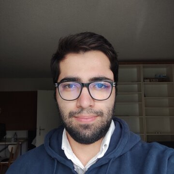
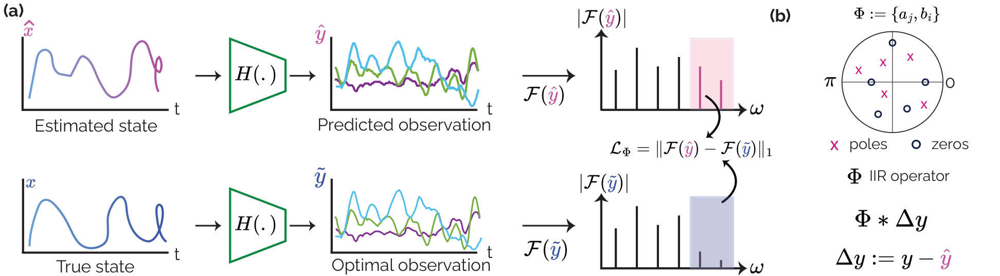
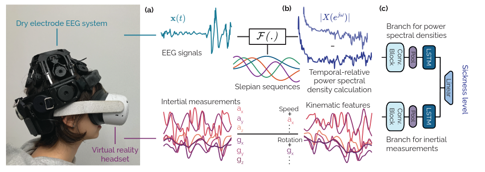
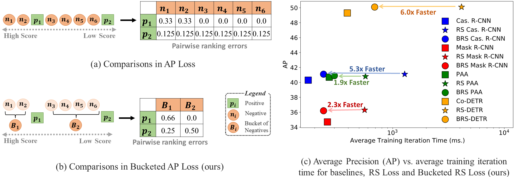

About Me
I received my Master of Science in Computer Engineering from Middle East Technical University (METU), where I worked at the Image Processing and Pattern Recognition Laboratory (ImageLab) under the supervision of Prof. Dr. Sinan Kalkan and Assoc. Prof. Dr. Emre Akbas.
My research addresses gradient-based learning in models that contain discrete decisions. Such decisions arise, for example, when detections are ranked by confidence, when predictions are assigned to ground-truth targets, or when tokens are routed through a subset of layers. The operations that implement them are piecewise constant, so their derivatives are zero almost everywhere or undefined, and they provide backpropagation with little or no gradient signal. I have developed surrogate gradients that preserve the structure of these operations, among them ranking, sorting, matching and routing, and have studied how the choice of surrogate influences what the network learns. Applications of this work include ranking-based and optimal transport losses for object detection. My master's thesis addressed one instance of the problem: the incorporation of piecewise linear functions with constant regions into backpropagation.
In parallel with this line of work, I have collaborated with international research groups on learning from physiological and sensor signals. At ETH Zürich's Sensing, Interaction & Perception Lab, I developed EEG-based models for continuous cybersickness detection in virtual reality and frequency-weighted neural Kalman filters for state estimation under band-limited measurement noise. At UC Irvine's Cyber-Physical Systems Laboratory, I contributed to the beat-by-beat classification of cardiac abnormalities from physiological signals.
News
- Jun 2026: Our paper "Frequency-Weighted Neural Kalman Filters" accepted at IEEE/ICRA 2026 in Vienna
- Apr 2025: Started a research internship at SIPLab, ETH Zürich, with Prof. Christian Holz
- Mar 2025: Our paper "Beyond Subjectivity" on EEG-based cybersickness detection accepted at IEEE/TVCG 2025 in Saint-Malo
- Jan 2025: Defended my M.Sc. thesis on piecewise linear functions in backpropagation at METU
- Aug 2024: Our paper "Bucketed Ranking Losses" on efficient detector training accepted at ECCV 2024 in Milan
- Sep 2022: Received the Best Paper Award at IEEE/SRMC'22 for our container IDS study
- Sep 2022: Started my M.Sc. in Computer Engineering at ImageLab, METU, with Prof. Sinan Kalkan and Assoc. Prof. Emre Akbas
Selected Publications



Education: Master of Science in Computer Engineering, METU (2025); Bachelor of Science in Computer Engineering, METU (2022).
Experience: Research Intern, SIPLab, ETH Zürich (2025); Research Assistant, ImageLab, METU (2023-present); Intern, ROMER, METU (2021-2022); Research Intern, AICPS, University of California, Irvine (2021).